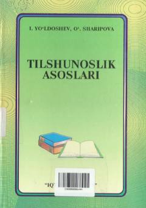

TAOliy o'quv yurtlari talabalari uchun tilshunoslik fanining nazariy asoslari haqida o'quv qo'llanma.
Mazkur o'quv qo'llanma oliy o'quv yurtlarining filologiya yo'nalishi talabalari uchun mo'ljallangan bo'lib, tilshunoslikning tarixi va nazariyasiga oid asosiy masalalarni yoritadi. Kitobda tilning paydo bo'lishi, til va tafakkur, leksikologiya, grammatika, sotsiolingvistika va tillarning tasnifiga oid mavzular atroflicha bayon etilgan.